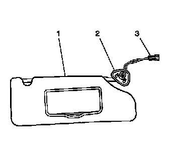
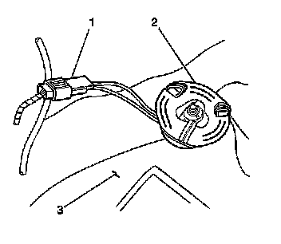

Sunshade Replacement
Sunshade Replacement
Removal Procedure
1. Detach the sunshade (1) from the sunshade rod retainer clip.
2. Remove the windshield pillar garnish molding. Refer to Windshield Pillar Garnish Molding Replacement (Service and Repair) .

3. Remove the fasteners from the outboard bezel (2).

Important: The sunshade bezel is secure to the roof by means of a two piece plastic retainer and metal integral clip.
4. The plastic retainer will fall out of the headliner when the three fasteners are removed from the bezel.
Notice: Use care when removing or installing the headliner. Excessive bending will damage the headliner.

5. Carefully reach inside the headliner until the electrical connector (1) is exposed.
6. Disconnect the electrical connector.
7. Remove the sunshade from the vehicle.
Installation Procedure
1. Position the sunshade to the headliner.
2. Push the electrical connector and the wiring through the hole in the headliner.
3. Connect the electrical connector (1).
4. Position the plastic retainer (2) over the top of the electrical harness.
5. Align the fasteners to the holes in the sunshade metal integral clip (2).
Notice: Refer to Fastener Notice (Fastener Notice) .
Important: Do not pinch the wiring (3) when you install the fasteners.
6. Install the fasteners that secure the bezel (2) to the headliner.
Tighten the fasteners to 2 N.m (18 lb in).
7. Install the windshield pillar garnish molding. Refer to Windshield Pillar Garnish Molding Replacement (Service and Repair) .
8. Secure the sunshade to the sunshade rod retainer.